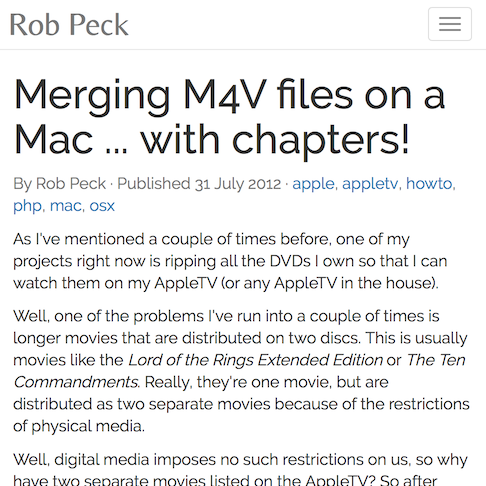

Merging M4V files (with chapters) on a Mac

I was in the middle of doing the exact same thing as this guy (copying all of my movies to my computer so they would be accessible via AppleTV... instead of having my kids scratch the discs), and I got to a movie he mentioned - Lord of the Rings (and Dances with Wolves... though my kids don't watch either of those movies). I love named chapters in movies, and wanted to have both a combined file, and have chapters. Simple walk-through right here. The added bonus is him pointing the way to iDentify, since MetaX has become abandonware.